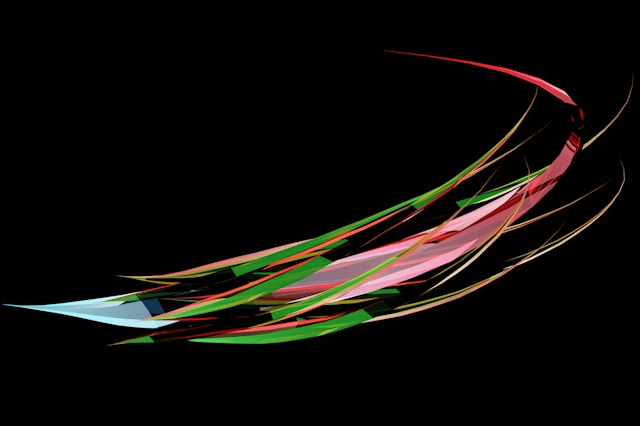

Patrick Lefler
insights
projects
Insights
GRC Engineering - Why Your Risk Function Needs to Think Like a Software Team
AI governance
GRC Engineering
Apr 27, 2026
When the AI Agent Approves Itself
AI governance
machine learning
Apr 21, 2026
The Wrong Probability for the Right Problem
bayesean probability
frequentist probability
Apr 15, 2026
The 99 Percent Problem - What the Mythos Red Team Report Actually Means for Fintech Risk Governance
fintech risk governance
vulnerability management
Apr 9, 2026
The Square Law Advantage - What Lanchester Law Mathematics Reveals About Security Budget Allocation
Lanchester Laws
Apr 8, 2026
Predator-Prey Dynamics and the CISO’s Dilemma -The Mathematics of Cyclical Underinvestment
Volterra Predator-Prey Model
Apr 2, 2026
Quantifying Anomaly - Triage at Scale Using Benford’s Law and R
Benford's Law
Incident Response
Mar 26, 2026
Beyond the Spreadsheet - Managing Risk in a World of Autonomous Agents
Agentic Finance
Probabilistic Thinking
Mar 19, 2026
The Fastest Code You’ve Never Read
Application Security
AI
Mar 12, 2026
2026 Crowdstrike Global Threat Report - Attackers now only need 29 minutes
Incident Detection
Incident Response
Mar 4, 2026
Beyond Luck - Using Bayes’ Theorem to Value Silent Success in Cybersecurity
Bayes' Theorem
Feb 26, 2026
Stop Treating Cyber Risk Like IT Risk
Cybersecurity
Feb 18, 2026
Strategic Application of Survival Analysis to Cybersecurity Risk Management
Survival Analysis
Vulnerability Management
Feb 11, 2026
Building Security Into Design - A STRIDE Implementation Roadmap for Small- to Medium-Sized Firms
Application Security
STRIDE
Feb 5, 2026
For Startups, Cybersecurity Is Not a Data Problem — It’s a Solvency Problem
Ransomware
Resiliency
Jan 28, 2026
The Illusion of Vendor Diversification - Why Your Supply Chain Has a Single Point of Failure
Third Party Risk
Resiliency
Jan 22, 2026
Coding the Tail - Implementing Block Bootstrap and Extreme Value Theory in R
Extreme Value Theory
Value at Risk
Jan 15, 2026
Managing the Unmanageable - Strategic Tools for Quantifying Tail Risk
Extreme Value Theory
Value at Risk
Jan 6, 2026
The Trap of the Bell Curve - Why Your Risk Models Are Lying to You
Extreme Value Theory
Value at Risk
Jan 1, 2026
Operational Readiness for Post-Quantum Cryptography - Three Questions Your Board Needs to Ask
Cryptography
Quantum Computing
Dec 16, 2025

The Quantum “Master Key” - Why Your Board Needs to Talk About Physics Sooner than Later
Cryptography
Shor's Algorythm
Dec 10, 2025
Tempo Is a Weapon - Dislocating the Adversary in Incident Response
Incident Response
OODA Loop
Dec 2, 2025
The Speed of Trust - Why Incident Response Demands “Command Intent” Over Centralized Control
Incident Response
OODA Loop
Nov 25, 2025
The ROI of Shifting Security Left
Application Security
DevOps
Nov 20, 2025
The Code You Didn’t Write - How Transitive Dependencies Became Your Greatest Security Liability
Application Security
Transitive Dependencies
Nov 13, 2025
Understanding Bitcoin Mining Through the Lens of Dutch Disease
Bitcoin
Blockchain
Dutch Disease
Nov 4, 2025
The Hidden Threat - Why Software Extensions Are Your Organization’s Blind Spot
Application Security
Browser Extension
Oct 28, 2025
The Network is the Risk - Understanding and Mitigating Eclipse Attacks in Blockchain Ecosystems
Blockchain
Eclipse Attack
Oct 23, 2025
Proactive Third-Party Risk Management with Shodan Intelligence
Shodan
Third Party Risk
Oct 21, 2025
Beyond Binary Alerts - Using Markov Switching Models to Detect Insider Threats
Markov Models
Insider Detection
Oct 16, 2025
Simpson’s Paradox in Cybersecurity - Why Your New Security Tool May Be Less Effective Than the One It Replaced
Simpson's Paradox
Incident Detection
Oct 8, 2025
Centralization by Stealth - Proactive Governance to Protect the Blockchain from the Majority Attack
Blockchain
Bitcoin
Oct 6, 2025
Merkle Trees - The Engine of Bitcoin’s Scalability and Integrity
Blockchain
Cryptography
Bitcoin
Oct 2, 2025
Beyond VaR - Expected Shortfall as the New Standard for Strategic Resilience
Value at Risk
Extreme Value Theory
Sep 30, 2025
Move Fast and Don’t Break Things - Embedding Risk Awareness Without Killing Innovation
Decision Making
Innovation
Sep 26, 2025
Leading Beyond the Breach - A Framework for Decisive Action in a Cyber Incident
Incident Response
OODA Loop
Sep 24, 2025
From Anomaly to Action - A Risk Manager’s Guide to Applying Benford’s Law
Benford's Law
Fraud Detection
Sep 22, 2025
Gaining the Edge - HowBayes’ Theorem Unlocks Deeper Reads in Texas Hold’em
Bayes' Theorym
Texas Hold'em
Sep 15, 2025
Using Poisson Distribution Analysis to Drive Financial Risk Insight
Financial Risk
Poisson Distribution
Sep 11, 2025
Beyond the Patch - Leveraging Poisson Distribution to Transform Bug Reporting into Strategic Risk Insight
Vulnerability Management
Poisson Distribution
Sep 9, 2025
The Hidden Dangers of Networked Risk - A Graph Theory Approach to Systemic Vulnerability
Graph Theory
Sep 4, 2025
Applying K-Means Clustering for Vulnerability Prioritization
K Means Clustering
Vulnerability Management
Sep 2, 2025
Leveraging the Endowment Effect for Project Risk Management
Endowment Effect
Project Management
Aug 26, 2025
Unmasking Malicious Webs - How the Bellman-Ford Algorithm Detects Threats in Social Networks
Bellman-Ford Algorithm
Incident Detection
Aug 21, 2025
The Problem with “Normal” Thinking - A Primer on Extreme Value Theory
Extreme Value Theory
Monte-Carlo Simulation
Aug 18, 2025
The Cybersecurity Data Deluge - Drowning in Information, Starved of Action
Cybersecurity
Data
Aug 14, 2025
The Poisson Distribution - A Cybersecurity Defender’s Ally in Detecting Brute-Force Attacks
Incident Response
Cybersecurity
Aug 12, 2025
Human Risk, Mathematical Solution - A Bayesian View on Insider Threat Detection
Extreme Value Theory
Monte-Carlo Simulation
Aug 6, 2025
No matching items